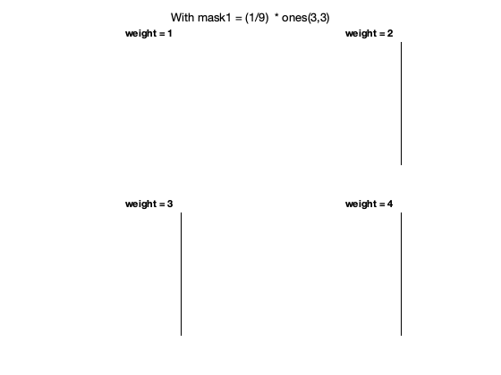
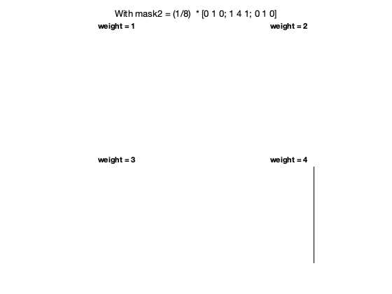
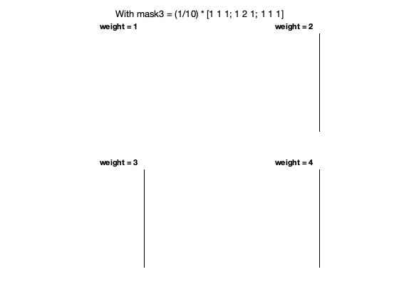
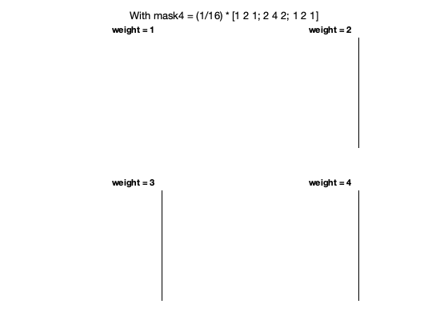
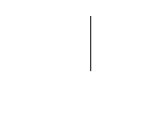

Problem 3 Unsharp Masking
Contents
Part(a)
clc; clear; close all; type unsharp.m
function im_out = unsharp(im_in, maskA, weight)
% INPUTS:
% im_in : Input Image
% maskA : small odd-sized lowpass filter mask (LPF)
% weight : positive number (k >= 1)
% OUTPUTS:
% im_out : Output Image
[a,b] = size( maskA );
maskB = zeros( size( maskA));
maskB(ceil(a/2),ceil(b/2)) = 1; % Original Signal (matrix of zeros with center 1)
maskC = maskB - maskA; % highFreq (HPF(orig)) = orig - LPF(orig)
maskD = maskB + weight * maskC; % output = orig + k * HPF(orig) : : unsharp mask
im_out = conv2(im_in,maskD,'valid'); % sharpened signal
end
EXPLANATION
- Mask B can be seen as the original signal, which is basically a matrix of zeros with 1 on the center position
- Mask C is the difference of original signal and the input of mask A, which is the lowpass filter mask (LPF), which is basically highpass filter mask (HPF). Because orignal signal is just the summation of HPF and LPF
- Mask D is the unsharp mask, which is the HPF added to the orignal signal with some positive weight multiplied to it.
- This function performs edge sharpening by taking in the orignal image and lowpass filter image and finds the highpass filter mask to be added to the original image. By defination, the edge sharpened image is generated by adding the high frequency mask to the original image. What high frequency mask means the pixel values that changes quickly, and this happens on the edge of objects in an image. Thus, adding a weighted highpass filter mask, just "bolds" the borders or the edges of the image. Hence, this function performs edge sharpening by just adding the high frequency content to the input image.
Part(b)
tst = ones(128,1)*[64*ones(1,32) (64:4:188) 192*ones(1,32) 64*ones(1,32)]; % first 32 col'ns w/ value 64, then 32 col'ns 64 of ramp going from 64 to % 199, then 32 columns of value 192 and finally 32 col'ns of value % imshow(tst)
Edge shapening with 3x3 Mask
% weighted mask mask1 = (1/9) * ones(3,3); mask2 = (1/8) * [0 1 0; 1 4 1; 0 1 0]; mask3 = (1/10) * [1 1 1; 1 2 1; 1 1 1]; mask4 = (1/16) * [1 2 1; 2 4 2; 1 2 1]; % masks=[mask1,mask2,mask3,mask4]; figure() for ii = 1:4 outA = unsharp(tst,mask1, ii); subplot(2,2,ii) imshow(outA) str = sprintf("weight = %d",ii); title(str) end sgtitle("With mask1 = (1/9) * ones(3,3)" )
figure() for ii = 1:4 outA = unsharp(tst,mask2, ii); subplot(2,2,ii) imshow(outA) str = sprintf("weight = %d",ii); title(str) end sgtitle("With mask2 = (1/8) * [0 1 0; 1 4 1; 0 1 0]" )
figure() for ii = 1:4 outA = unsharp(tst,mask3, ii); subplot(2,2,ii) imshow(outA) str = sprintf("weight = %d",ii); title(str) end sgtitle("With mask3 = (1/10) * [1 1 1; 1 2 1; 1 1 1]" )
figure() for ii = 1:4 outA = unsharp(tst,mask4, ii); subplot(2,2,ii) imshow(outA) str = sprintf("weight = %d",ii); title(str) end sgtitle("With mask4 = (1/16) * [1 2 1; 2 4 2; 1 2 1]" )
mask1 = 1/25 *ones(5,5); figure() % for ii = 1:4 outA = unsharp(tst,mask1, ii); % subplot(2,2,ii) imshow(outA) % str = sprintf("weight = %d",ii); % title(str) % end % sgtitle("With 1/25 *ones(5,5)" ) % maskC = ones(7,7); % % % unweight % % unweighted mask % maskA = k(1)*ones(3,3); % maskB = k(1)*ones(5,5); % maskC = ones(7,7);